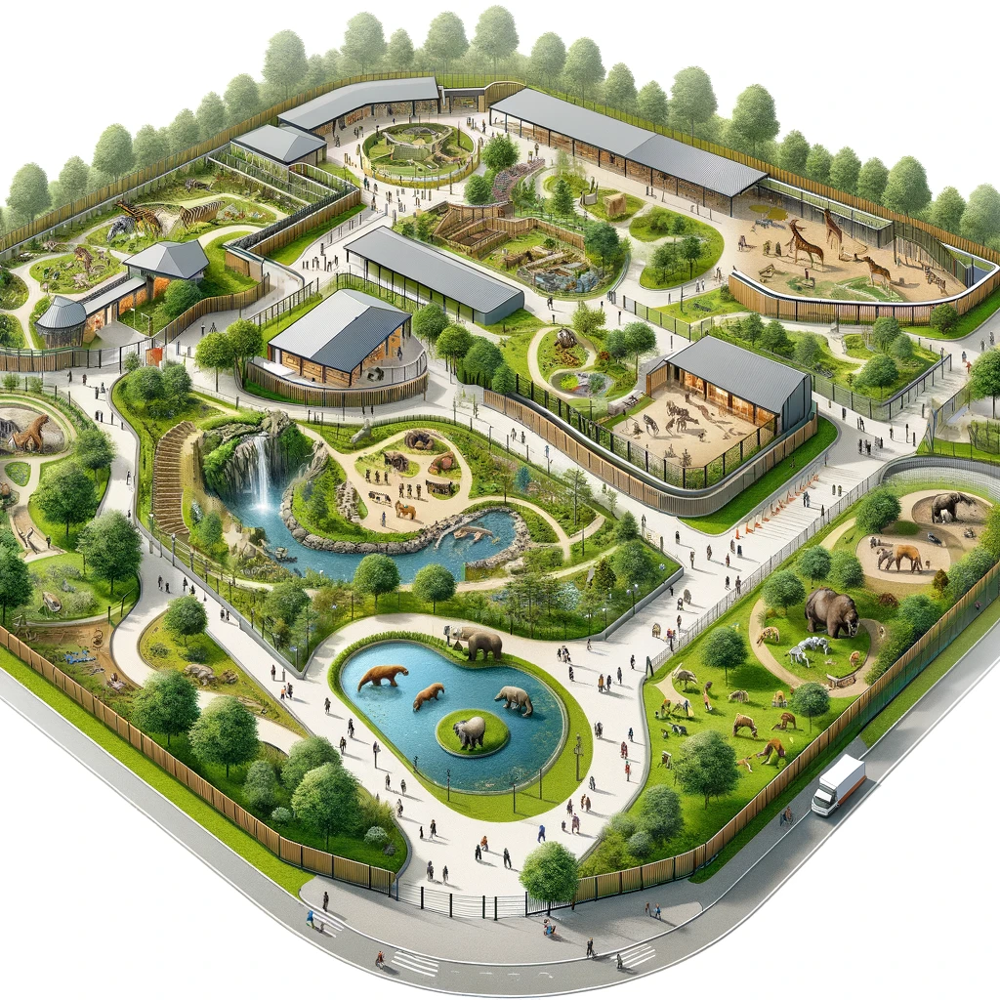

園區整修！我們精心擬定了一項令人振奮的計劃，旨在提升這個美麗的地方。
新的設施、花園和娛樂區將帶來更多樂趣和舒適，讓您享受更豐富的休閒體驗。
歡迎您參觀我們的改造，一同見證園區的嶄新面貌！
發佈日期:2023-10-16
更新日期:2023-10-16
(• ω• )觀看次數:5.9萬
園區整修，或許是一個令人感到有些遺憾的決定，但讓我們先說明一下。為了提供更好的體驗，我們必須進行一些變更，這將導致
一些我們熟悉的景點暫時不可用。這可能讓一些觀眾感到失望，我們完全理解這種情感。
然而，我們希望你知道，這個整修計畫將會讓園區更加美麗、現代化和舒適。新的設施、花園和娛樂區將提供更多樂趣和便利，讓
您的未來訪問更加令人期待。我們保證，經過這些改變，您將會在我們的園區中享受到更多驚喜和愉悅。
請耐心等待，新的園區將會以全新的面貌迎接您的光臨。我們正努力工作，確保整修順利進行，以便讓您和您的家人朋友能夠在這
個特殊的地方創造更多美好回憶。讓我們一起期待未來，感受到整修後帶來的驚喜和快樂！
動物園上
一些我們熟悉的景點暫時不可用。這可能讓一些觀眾感到失望，我們完全理解這種情感。
然而，我們希望你知道，這個整修計畫將會讓園區更加美麗、現代化和舒適。新的設施、花園和娛樂區將提供更多樂趣和便利，讓
您的未來訪問更加令人期待。我們保證，經過這些改變，您將會在我們的園區中享受到更多驚喜和愉悅。
請耐心等待，新的園區將會以全新的面貌迎接您的光臨。我們正努力工作，確保整修順利進行，以便讓您和您的家人朋友能夠在這
個特殊的地方創造更多美好回憶。讓我們一起期待未來，感受到整修後帶來的驚喜和快樂！
動物園上


動物園(Zoo)
地址：116台北市文山區新光路二段30號
電話：0229382300
更新日期 2023-11-17
Copyright © 2023 Zoo Inc. All rights reserved.